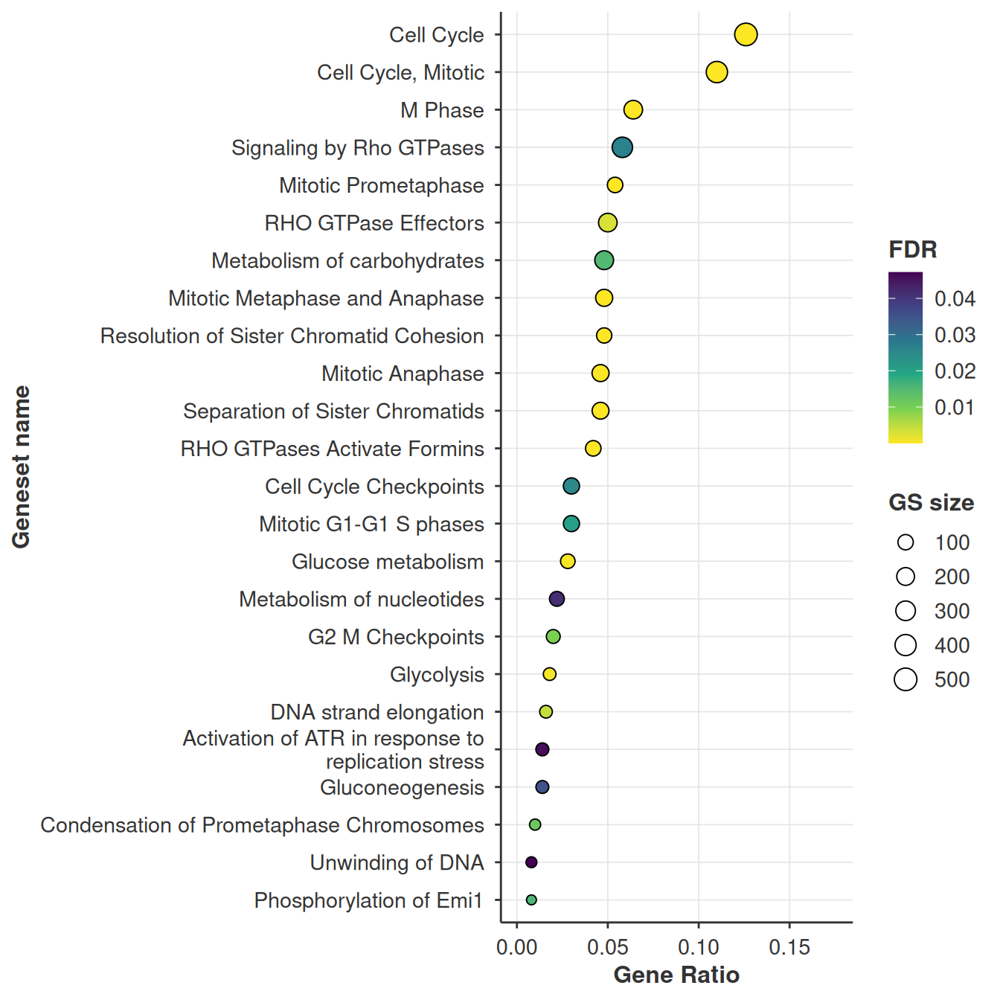
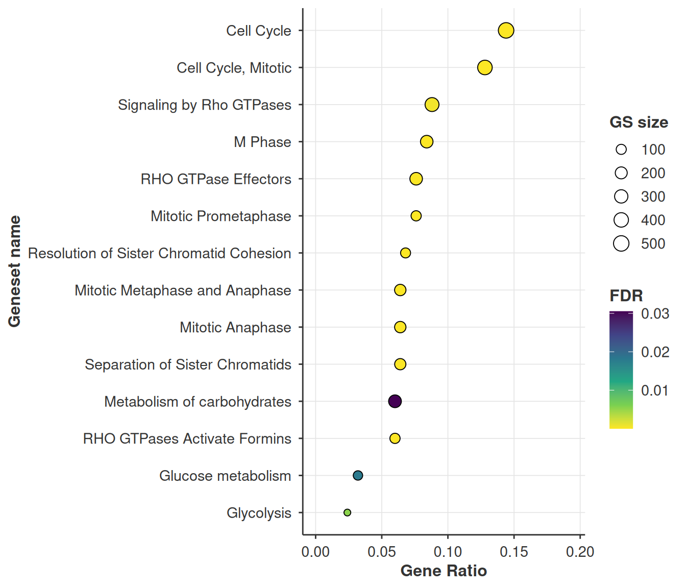
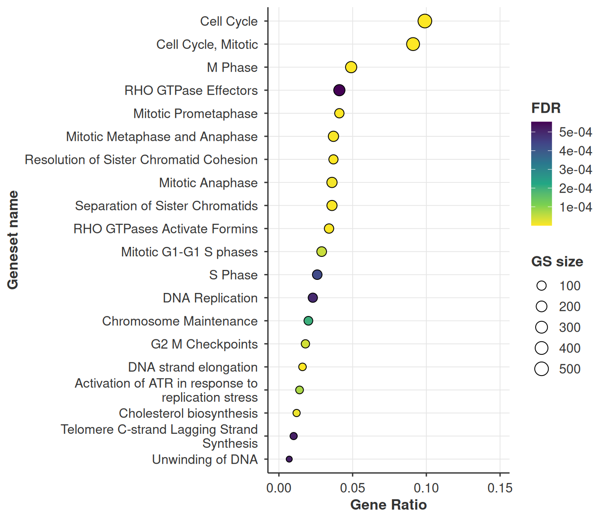
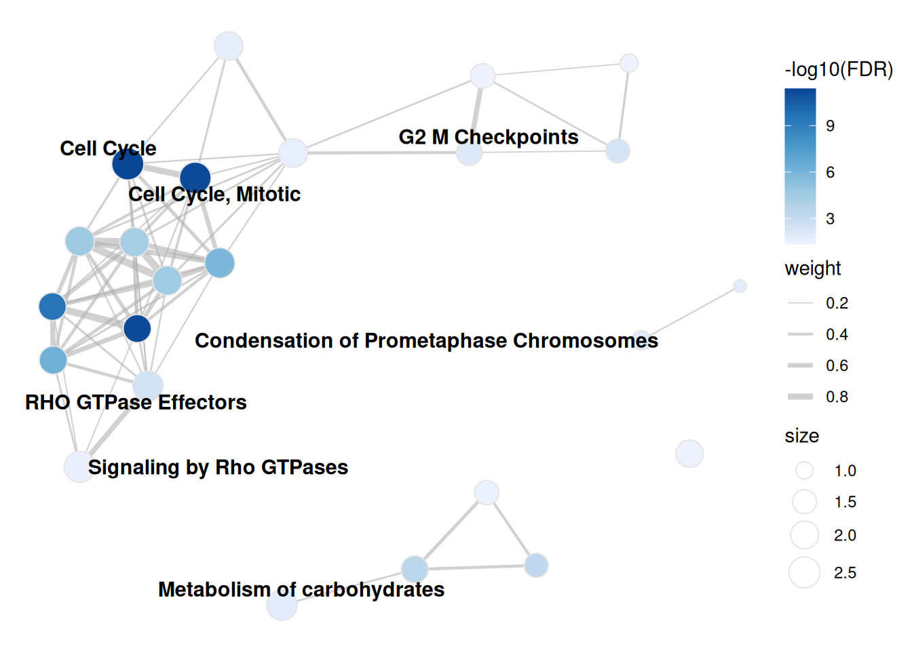
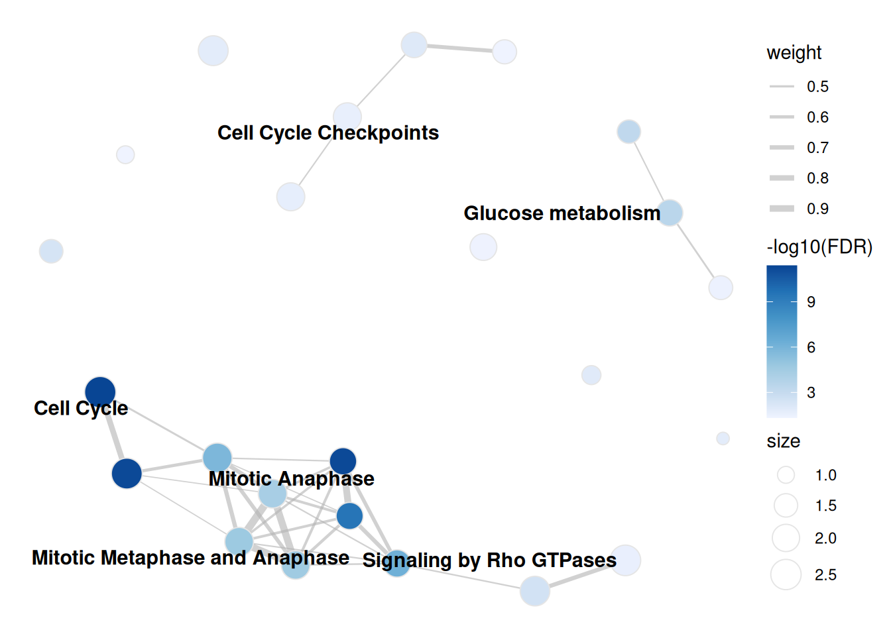
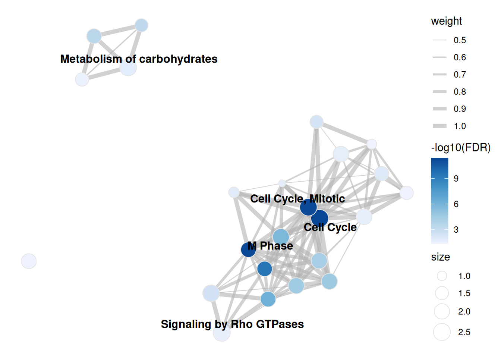

library(bixverse)
library(bixverse.plots)
library(data.table)
#>
#> Attaching package: 'data.table'
#> The following object is masked from 'package:base':
#>
#> %notin%
library(ggplot2)
library(magrittr)Visualising over-representation results
2026-09-04
Intro
Over-representation analysis takes a discrete gene list and asks which gene sets it overlaps more than chance would allow. bixverse does the hypergeometric test through gse_hypergeometric() and gse_hypergeometric_list(). This vignette covers the plotting side: dot plots and enrichment maps.
For the test itself and the GO-aware variants, see the gene set enrichment vignette in the parent package.
The data
Same mouse ranking and Reactome pathways as the GSEA vignette, so the enrichment maps in the two are directly comparable. ORA needs a discrete list, so we cut the ranking at the top 500 genes and use the full measured set as the universe.
Picking the universe properly matters more than people give it credit for. All 12,000 measured genes is the right call here; the union of the library would quietly assume every gene in Reactome was assayed.
data(examplePathways, package = "fgsea")
data(exampleRanks, package = "fgsea")
stats <- sort(exampleRanks, decreasing = TRUE)
gene_universe <- names(stats)
# the numeric Reactome prefix carries nothing and the underscores make for
# ugly labels. Clean the names once, up front
pathways <- examplePathways
names(pathways) <- gsub("_", " ", gsub("^\\d+_", "", names(pathways)))
target_genes <- head(gene_universe, 500)
ora_res <- gse_hypergeometric(
target_genes = target_genes,
gene_set_list = pathways,
gene_universe = gene_universe,
threshold = 0.05
)
head(ora_res)
#> gene_set_name odds_ratios pvals
#> <char> <num> <num>
#> 1: Cell Cycle 3.606728 2.767505e-15
#> 2: Cell Cycle, Mitotic 3.857772 1.066533e-14
#> 3: Mitotic Prometaphase 8.358920 1.154958e-14
#> 4: Resolution of Sister Chromatid Cohesion 7.892483 8.862807e-13
#> 5: RHO GTPases Activate Formins 5.887634 2.011143e-09
#> 6: M Phase 3.676028 6.335464e-09
#> fdr hits gene_set_lengths target_set_lengths
#> <num> <num> <num> <int>
#> 1: 4.032255e-12 63 505 500
#> 2: 5.609247e-12 55 412 500
#> 3: 5.609247e-12 27 105 500
#> 4: 3.228277e-10 24 97 500
#> 5: 5.860471e-07 21 106 500
#> 6: 1.538462e-06 32 242 500Dot plots
plot_gse_dotplot() takes the results table straight from gse_hypergeometric().
plot_gse_dotplot(ora_res)
Four things are encoded and only two of them are obvious, so: the x axis is the gene ratio, hits / target_set_lengths, i.e. the fraction of your input list that landed in the set. Pathways are ordered by that same ratio. Fill is FDR and point size is the size of the gene set.
That last one is the pairing to read carefully. A big point far to the right is a large gene set swallowing a large chunk of your list, which is usually less interesting than a small point at the same x position.
Key arguments:
| Argument | Description |
|---|---|
res |
Results table. Needs hits, target_set_lengths, gene_set_name, gene_set_lengths and fdr. |
size_range |
Point size range, smallest to largest gene set. |
viridis_option |
Which viridis map to use for the fill, "A" through "H". |
direction |
1 or -1, flips the fill scale. |
max_terms |
Keep only the N most significant sets. Defaults to NULL, everything. |
.verbose |
Silences the message about splitting when several target sets are present. |
... |
Forwarded to wrap_and_truncate(), which shortens the labels. width and max_lines are the ones you want. |
Several target sets at once
gse_hypergeometric_list() tests many lists in one go and adds a target_set_name column. plot_gse_dotplot() picks that up and returns a named list of plots rather than a single one.
ORA depends on where you cut the ranking, and it is worth seeing how much. Same statistic, three thresholds:
target_list <- list(
top_250 = head(gene_universe, 250),
top_500 = head(gene_universe, 500),
top_1000 = head(gene_universe, 1000)
)
ora_res_ls <- gse_hypergeometric_list(
target_genes_list = target_list,
gene_set_list = pathways,
gene_universe = gene_universe,
threshold = 0.05
)
ora_res_ls[, .N, by = target_set_name]
#> target_set_name N
#> <char> <int>
#> 1: top_1000 54
#> 2: top_500 24
#> 3: top_250 1414, 24 and 54 significant pathways off one ranking, with 13 common to all three. The cell cycle story survives every cut, which is reassuring, but the long tail is entirely an artefact of where you drew the line. This is the reason to reach for GSEA when you have a full ranking.
54 gene sets do not fit on a dot plot, and Reactome names are long enough to swallow the panel whole. max_terms keeps the most significant N, and anything in ... goes to wrap_and_truncate() for the labels.
plots <- plot_gse_dotplot(
ora_res_ls,
max_terms = 20L,
width = 40L,
.verbose = FALSE
)
plots$top_250
plots$top_1000
Enrichment maps
Reactome is a hierarchy, so significant hits arrive in correlated clumps. An enrichment map makes that structure explicit: nodes are gene sets, edges are the overlap between them, and Louvain clustering pulls out the groups.
enrichment_map_oae() builds the igraph from the ORA results. Nodes are coloured by -log10(FDR) here, where the GSEA version colours by NES.
enrichment_map <- enrichment_map_oae(
res = ora_res,
threshold = 0.05,
pathways = pathways,
min_sim = 0.2,
resolution = 1.0
)
enrichment_map
#> IGRAPH 19de90c UNW- 24 66 --
#> + attr: layout (g/n), color_type (g/c), name (v/c), size (v/n),
#> | community (v/n), label (v/c), neg_log10_fdr (v/n), color_value (v/n),
#> | weight (e/n)
#> + edges from 19de90c (vertex names):
#> [1] Cell Cycle Checkpoints --Activation of ATR in response to replication stress
#> [2] DNA strand elongation --Activation of ATR in response to replication stress
#> [3] G2 M Checkpoints --Activation of ATR in response to replication stress
#> [4] Activation of ATR in response to replication stress--Unwinding of DNA
#> + ... omitted several edges
plot_enrichment_map_ggraph(enrichment_map, label_nodes = "adaptive")
#> Warning: Removed 17 rows containing missing values or values outside the scale range
#> (`geom_text_repel()`).
Three arguments change the picture, and they are all set when you build the graph rather than when you plot it.
min_sim is the edge threshold. Raise it and weak overlaps vanish, which splits the graph into more, tighter communities. On this data 0.1 gives 89 edges across 6 communities and 0.4 gives 32 edges across 11.
enrichment_map_strict <- enrichment_map_oae(
res = ora_res,
threshold = 0.05,
pathways = pathways,
min_sim = 0.4
)
plot_enrichment_map_ggraph(enrichment_map_strict, label_nodes = "adaptive")
#> Warning: Removed 18 rows containing missing values or values outside the scale range
#> (`geom_text_repel()`).
resolution is the Louvain knob: higher gives more, smaller communities. It only changes the colouring and how many labels adaptive mode shows, never the edges.
overlap_coefficient swaps Jaccard for the overlap coefficient. Worth flipping whenever your library mixes very different set sizes. Jaccard punishes a small set nested inside a large one, the overlap coefficient scores it as 1, which is usually what you meant for a hierarchy like Reactome.
enrichment_map_overlap <- enrichment_map_oae(
res = ora_res,
threshold = 0.05,
pathways = pathways,
overlap_coefficient = TRUE,
min_sim = 0.5
)
plot_enrichment_map_ggraph(enrichment_map_overlap, label_nodes = "adaptive")
#> Warning: Removed 19 rows containing missing values or values outside the scale range
#> (`geom_text_repel()`).
The interactive version takes the same graph, keeps the layout, and lets you hover for the full pathway name rather than the truncated label.
plot_enrichment_map_visnetwork(enrichment_map)Saving
save_plot() writes a single plot, save_plot_ls() writes a named list, which is exactly what plot_gse_dotplot() hands back for a multi-target run. File names come from the list names. Both take a params_plots() list.
plot_params <- params_plots(
width = 8,
height = 6,
file_type = ".png",
res = 450L
)
save_plot(
plot = plot_gse_dotplot(ora_res),
path = file.path(tempdir(), "ora_dotplot"),
plot_params = plot_params
)
# one file per target set
save_plot_ls(
plot_ls = plots,
path = file.path(tempdir(), "ora_dotplots"),
plot_params = plot_params
)Related
Working from a full ranking rather than a cut list? The GSEA vignette covers running enrichment curves, the GSEA flavour of the enrichment map, and the blitzGSEA calibration diagnostics.